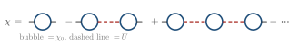
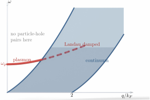

Page 6 of 15 of this session
9.5a Interactions as a perturbation, with RPA, plasmons and the Stoner instability
So far the perturbation has been an external impurity. What happens to the response when the perturbation is the electron-electron interaction itself? We will now see that a whole series of terms in the interaction can be summed, which gives the random phase approximation (9.6). It screens the charge response, and a zero of its denominator gives the plasmon (9.7), a collective mode at the frequency \(\omega_p\), where no particle-hole pair exists.
\[\chi_0(q,\omega) = \frac{1}{N} \sum_k \frac{n_F(\varepsilon(k)) - n_F(\varepsilon(k+q))}{\varepsilon(k+q) - \varepsilon(k) - \hbar\omega - i0^+}. \tag{9.5}\]
This is the dynamical Lindhard function of Section 9.4b, the response of the Fermi sea without interaction. It sums over the pairs of one filled and one empty state, \(k\) and \(k+q\), in both orders. Its imaginary part vanishes outside the particle-hole continuum, the set of \((q,\omega)\) where such a pair has the energy \(\hbar\omega\). At \(\omega=0\) it is the static function (9.4), which is positive.
We use \(\chi_0\), the non-interacting response that we just built, as input, and we ask for the response \(\chi\) of the full interacting system. For this we need two things. The first is a rule that connects \(\chi\) to \(\chi_0\), and the second is a criterion to find instabilities from \(\chi\).
From \(\chi_0\) to \(\chi\) with the random phase approximation. Let us take a contact interaction of the Hubbard type of (1.7), with strength \(U\), which couples the densities of the two spins. The physical picture is a diagrammatic one. The response to a probe is the bare response \(\chi_0\), plus the bare response followed by one interaction event and another bare response. Then come two interaction events and so on, which is an infinite ladder of terms. The most efficient way to include all of them is not to sum the series term by term, but to write the self-consistent equation that the full response must satisfy,
\[\chi(q,\omega) = \chi_0(q,\omega) - \chi_0(q,\omega)\, U\, \chi(q,\omega),\]
and its algebraic solution gives the random phase approximation (RPA).
The response of the interacting system in the random phase approximation is
\[\chi(q,\omega) = \frac{\chi_0(q,\omega)}{1 + U\,\chi_0(q,\omega)}. \tag{9.6}\]
It is the sum of the whole series of bubbles \(\chi_0-\chi_0U\chi_0+\chi_0U\chi_0U\chi_0-\dots\) for \(|U\chi_0|<1\), and beyond this range it is the solution of the self-consistent equation. It has a pole, a zero of \(1+U\chi_0\), which no finite order in \(U\) has.
Here \(\chi_0\) counts one spin. For an interaction that couples to the total density, the denominator is \(1+2v(q)\chi_0\).
The steps From the bubble series to the RPA (9.6)
The simplest way to see the series is to solve the self-consistent equation by iteration. We start from \(\chi\approx\chi_0\) and put it on the right side,
\[\chi \approx \chi_0 - \chi_0U\chi_0,\]
which is the bare bubble plus the bubble with one interaction line. Putting this again on the right side gives one more term,
\[\chi \approx \chi_0 - \chi_0U\chi_0 + \chi_0U\chi_0U\chi_0,\]
and each new iteration adds one bubble and one interaction line, with the factor \(-U\chi_0\). At fixed \(q\) and \(\omega\) both \(U\) and \(\chi_0\) are numbers, so the series is geometric,
\[\chi = \chi_0\left[1 - U\chi_0 + (U\chi_0)^2 - (U\chi_0)^3 + \dots\right] = \frac{\chi_0}{1+U\chi_0},\]
and the sum holds for \(|U\chi_0|<1\). The self-consistent equation gives the same result directly, since it reads \(\chi\,(1+U\chi_0)=\chi_0\), and this solution holds also for \(|U\chi_0|\geq1\), where the series does not converge. The one exception is \(U\chi_0=-1\), where the equation reads \(0=\chi_0\) and has no solution. Each truncation of the series is a polynomial in \(U\chi_0\), which stays finite. So the pole of (9.6) at \(U\chi_0=-1\) appears only in the sum to all orders.
Equation (9.6) has a mixed character. It is derived order by order in \(U\), so it is perturbative, but since we sum the whole geometric series it becomes non-perturbative. In this way it includes physics that no finite order in \(U\) can give, which is a real pole. A pole at \(\omega=0\) is a phase transition, and a pole at a finite frequency, such as the plasmon, is a collective mode. The first terms of the series are drawn in Schematic 9.7.

Two different sources of divergence. The interacting response (9.6) can diverge for two quite different reasons. It is useful to separate them, because they correspond to two different emergent quasiparticles.
From \(\chi_0\) itself, as in Section 9.4. This is an electron-hole excitation, which is a single-particle process that moves one electron from an occupied state to an empty state.
From the RPA denominator, \(1+U\chi_0=0\), which is a new collective phenomenon that comes from the interaction. For a long-range Coulomb interaction, \(U \to 2v(q)\), which depends strongly on \(q\) and diverges as \(q\to0\). The pole of (9.6) as a function of \(\omega\) at fixed \(q\) then defines a new quasiparticle, the plasmon, which is a collective charge oscillation of the whole electron gas. Its dispersion depends on the screening and on the dimensionality of the system. In the standard RPA treatment of the three-dimensional electron gas, which is the Bohm-Pines treatment, the dispersion at long wavelength has the form below.
The plasmon of the three-dimensional electron gas has, at long wavelength, the dispersion
\[\omega_{\rm pl}(q)^2 = \omega_p^2 + \tfrac{3}{5} v_F^2\, q^2 + O(q^4), \tag{9.7}\]
where \(\omega_p\) is the classical plasma frequency. It is a collective mode of the whole charge density, with the finite frequency \(\omega_p\) also at \(q=0\).
The steps From a zero of the denominator to the plasma frequency
Let us take the simplest case, \(q\to0\) at a fixed frequency \(\omega\). Then \(\hbar\omega\) is far above every pair energy \(\Delta_k=\varepsilon(k+q)-\varepsilon(k)\), which is at most about \(\hbar v_Fq\), and each term of (9.5) can be expanded in powers of \(\Delta_k/\hbar\omega\),
\[\frac{1}{\Delta_k-\hbar\omega}=-\frac{1}{\hbar\omega}-\frac{\Delta_k}{(\hbar\omega)^2}-\dots\]
The first term gives zero, since the sum of \(n_F(\varepsilon(k))-n_F(\varepsilon(k+q))\) over \(k\) vanishes. In the second term we shift \(k\to k-q\) in the part with \(n_F(\varepsilon(k+q))\), and we get
\[\chi_0(q,\omega)\approx-\frac{1}{N(\hbar\omega)^2}\sum_k n_F(\varepsilon(k))\big[\varepsilon(k+q)+\varepsilon(k-q)-2\varepsilon(k)\big].\]
For free electrons, \(\varepsilon(k)=\hbar^2k^2/2m\), the bracket is \(\hbar^2q^2/m\) for every \(k\). For the electron gas the sum \(\frac1N\sum_k\) becomes an integral over \(k\) per unit volume, so it counts the electrons of one spin per unit volume, and
\[\chi_0(q,\omega)\approx-\frac{n_\sigma q^2}{m\omega^2},\]
with \(n_\sigma=n/2\) the density of one spin. So above the continuum \(\chi_0\) is negative. The Coulomb interaction \(v(q)=4\pi e^2/q^2\), in Gaussian units, couples to the total density, so the plasmon is the zero of \(1+2v(q)\chi_0\), which is at
\[\omega^2=\frac{2v(q)\,n_\sigma q^2}{m}=\frac{4\pi ne^2}{m}=\omega_p^2.\]
This is the classical plasma frequency. With \(1+v(q)\chi_0\) the zero would sit at \(\omega_p/\sqrt2\), since this \(\chi_0\) counts only one spin.
The plasmon exists even at \(q=0\), which is different from the particle-hole continuum, because it is a collective mode of the whole charge density and not a single-particle excitation. Figure 9.2 shows both kinds of divergence in the same \((q,\omega)\) plane, and it shows explicitly the window at small \(q\) where the pole exists and no single-particle excitation exists.

The same denominator, now in the spin channel, gives the Stoner instability, and we treat it next.
With infrared nano-imaging, this article shows that graphene on SiO\(_2\)/Si with a back gate supports propagating surface plasmons. Their wavelength is of the order of \(200\) nm at infrared frequencies, and they can propagate several times this distance. The authors change both the amplitude and the wavelength of these plasmons with the gate voltage. They read real space profiles of plasmon standing waves between the tip of the nano-probe and the edges of the sample. Our reading is that graphene is two-dimensional, and in two dimensions the Fourier transform of the Coulomb interaction goes as \(1/q\) and not as \(1/q^2\). The zero of the RPA denominator then gives \(\omega_{\rm pl}^2\propto q\) at small \(q\), so this plasmon goes to zero as \(q\to0\), and it does not have the three-dimensional form (9.7). In our reading the gate changes the density of carriers, and with it \(\chi_0\) and the wavelength of the plasmon at a given frequency.
The RPA response of the density is
\[\chi(q,\omega) = \frac{\chi_0(q,\omega)}{1 + U\,\chi_0(q,\omega)}.\]
The interaction is repulsive, \(U>0\), and the static \(\chi_0(q,0)\) is positive. On the half-filled square lattice at \(T=0.1t\), \(\chi_0(q,0)=0.68/t\) at \(q=(\pi,\pi)\). How does the static \(\chi\) compare with \(\chi_0\)?
Show the answers
- A. ✓ True
This is true. For \(U=t\) and \(\chi_0=0.68/t\) we get \(\chi=0.68/1.68=0.40\) in units of \(1/t\), which is smaller than \(\chi_0\). The repulsion opposes the induced density, which is screening. In the spin channel the sign is opposite.
- B. ✗ False
This is false. For \(U=t\) and \(\chi_0=0.68/t\) the RPA response is \(0.68/1.68=0.40\). This is smaller, since a repulsive \(U\) enhances only the spin channel and not the density one.
- C. ✗ False
This is false. The denominator \(1+U\chi_0\) is \(1.68\) for \(U=t\) and \(\chi_0=0.68/t\), so the response changes by this factor. The poles are shifted too, but the static response at each \(q\) changes as well.
The particle-hole pairs of the electron gas fill \(0<\omega<\omega_+\) for \(q<2k_F\), with
\[\hbar\omega_+=\hbar v_Fq+\frac{\hbar^2q^2}{2m}.\]
The plasmon has the dispersion
\[\omega_{\rm pl}(q)^2=\omega_p^2+\tfrac35v_F^2q^2.\]
Why is the plasmon not damped at small \(q\)?
Show the answers
- A. ✗ False
This is false. For the Coulomb interaction \(v(q)\propto1/q^2\) diverges at \(q\to0\). The interaction is not zero there, and its divergence is what puts the plasmon at the finite \(\omega_p\).
- B. ✓ True
This is true. Landau damping needs a pair with the same \(q\) and \(\omega\). At \(q=0.1k_F\) the pairs end at \(\hbar\omega_+=0.21E_F\), with \(E_F=\hbar^2k_F^2/2m\), and \(\omega_+\) goes to zero with \(q\). The plasmon stays at \(\omega_{\rm pl}\geq\omega_p\), and \(\hbar\omega_p=1.9E_F\) for one electron per sphere of radius \(4a_0\), with \(a_0\) the Bohr radius. So no pair exists at its energy and the mode is sharp.
- C. ✗ False
This is false. The plasmon is a collective mode of all electrons. The same mode does decay when its branch enters the continuum at larger \(q\), which shows that it is not protected as a single particle.
The RPA response is
\[\chi=\frac{\chi_0}{1+U\chi_0}.\]
Which series in \(U\) does it sum?
Show the answers
- A. ✓ True
This is true. Each term adds one bubble and one interaction line with the factor \(-U\chi_0\), and this geometric series sums to \(\chi_0/(1+U\chi_0)\) for \(|U\chi_0|<1\). For \(U\chi_0=0.2\) the three terms give \(0.84\,\chi_0\), close to the \(0.833\,\chi_0\) of the formula.
- B. ✗ False
This is false. This series sums to \(\chi_0/(1-U\chi_0)\), which is \(1.25\,\chi_0\) for \(U\chi_0=0.2\), and not \(0.833\,\chi_0\). It has the sign of the spin channel, where the same \(U\) enhances the response.
- C. ✗ False
This is false. This is only the first order in \(U\). For \(U\chi_0=0.2\) it gives \(0.8\,\chi_0\), while the formula gives \(0.833\,\chi_0\), and at no value of \(U\) does it have a pole.
The RPA response (9.6) is the sum of the series \(\chi_0\left[1-U\chi_0+(U\chi_0)^2-\dots\right]\). Take the first three terms for \(U\chi_0=0.5\) and compare them with (9.6). Then do the same for \(U\chi_0=2\). What does this say about a calculation that stops at a finite order in \(U\)?
Solution
For \(U\chi_0=0.5\) the three terms give \(\chi_0(1-0.5+0.25)=0.75\,\chi_0\), and (9.6) gives \(\chi_0/1.5=0.667\,\chi_0\). The next term, \(-0.125\,\chi_0\), brings the sum to \(0.625\,\chi_0\). So the partial sums come closer to \(0.667\,\chi_0\) from the two sides, since the series converges for \(|U\chi_0|<1\).
For \(U\chi_0=2\) the three terms give \(\chi_0(1-2+4)=3\,\chi_0\). The partial sums are \(1\), \(-1\), \(3\) and \(-5\) times \(\chi_0\), which jump with a growing size, so the series does not converge. The formula (9.6) still gives \(\chi_0/3=0.333\,\chi_0\), and this value solves the self-consistent equation \(\chi=\chi_0-\chi_0U\chi\), since \(\chi_0/3=\chi_0-2\chi_0/3\).
So a calculation at a finite order in \(U\) works only when \(|U\chi_0|\) is small. For \(|U\chi_0|\geq1\) the series does not converge, while the closed form (9.6), the solution of the self-consistent equation, stays finite. The one exception is its pole at \(U\chi_0=-1\), which no truncation has. This is why a collective mode cannot be found at any finite order in \(U\).